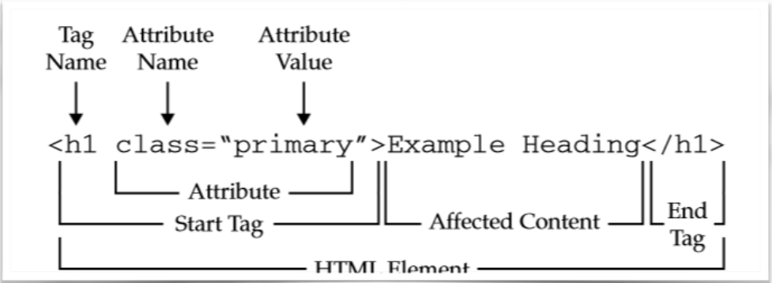

Introduktion til HTML
Html betyder hypertext markup language som er standarden for at lave websites. En del af html sproget er at kunne lave attributter som fortæller om hvad indholdet af et tag indeholder.
Tagget med et tag navn er også det man kalder for et semantisk tag som betyder at det er element med betydning.
Semantiske tags er grundlæggende sten til at lave websites. Nogle semantiske tags kan være f.eks:
header svarer til et sidehoved
Der kan være flere headers på en side, typisk i hver sin egen section
Section tags indeholder typisk sidens header også navigationen, der ligger mellem nav og
/nav. En header afsluttes med /header
Et header tag skal ikke forveksles med head tag som indeholder meta-information og er usynlig et footer tag minder meget om en header dog forskellen er at en footer
indeholder typisk information for en sidefod, eks. copyright info osv.

Editor
En editor er det program hvor du skriver din html koder, (Også CSS, Javascript og mange andre typer koder) hvor det er ren tekst uden formatering. Den Editor som vi blev introduceret til hedder Brackets, hvor man kan se resultatet synkront i en chrome browser, som betyder vi kan se hvordan vores hjemmeside ser ud, imens vi laver det og vi kan highlighte koden, så man kan se hvor vi er i koden.
SEO
SEO betyder Search Engine Optimization og dette er utroligt vigtigt når man laver moderne websites. I grove træk betyder det at ens HTML er semantisk som betyder at disse elementer/tags man bruger har en betydning. Dette gør at det bliver meget nemere at forstå den kode vi har lavet for alle sammen. Dette betyder også, at søgemaskine har en bedre forståelse af det indhold der er på sitet.
Hvad er CSS?
CSS betyder Cascading Style Sheets og er et sprog der er understøttet af HTML der beskriver udseendet på de websites man laver. Det er sprog ved hjælp af HTML dermed til at adskille struktur og udseende.Det CSS går ind og gør er at “Style” dit website som angives som “rules” Altså nogle regler der kan navngives og refereres i din html fil. Et Stylesheet er en samling af disse regler og cascading henviser til de regler for hvornår hvilken styles gælder.
Internt og eksternt stylesheet
CSS kan angives på 2 forskellige måder. Enten i dit Html dokument så det er blevet embedded men så gælder det kun for den ene html fil du arbejder på - Dette er den man kalder for internet/embedde stylesheet. Her er det du skriver du din CSS inde i selve HTML'en og dette gøre ved at bruge et style tag som places inde i head sektionen.
Hvis du derimod vil benytte dig af samme style på flere html dokumenter så kan du placerer din CSS i et eksternt dokument, altså som et link så alle dine html dokumenter ser ensartet ud som kan være en fordel hvis du arbejder med mange sider på en gang. Dette kalder man for eksternt stylesheet. Metoden går ud på at bruge at man refere sin css fil i sit html dokument ved hjælp af et link tag i head sektionen
Når det så er du skal vælge hvad der skal styles så benytter du dig af CSS Syntaks som er den måde man bestemmer på hvordan hvad det er der skal styles. Det gøres ved hjælp af nogle selectors som kan være flere udvalgte elementer (.class) eller et helt specifikt element (#id) Samme med de her selectors så benytter sig af det man kalder for deklarationer. Deklarationen startes med en krøllet parentes og sluttes med den tilsvarende. Udover dette består den også af egenskaber (Properties) og værdier (values) som er adskilt af et kolon. Når man er færdig med sin egenskab så afslyttes det med et semikolon.

Der findes 3 primære selectors:
De almindelige tags som p, h1, body.
Id selector som er en selector for når vi har et helt specifikt element vi gerne vil style. Det kan enten være et mærket op med et (unikt)id (img id=”logo) eller med en selector i stylesheet via et hashtag (# {...})
Class selector som er når vi vil ramme flere elementer der skal styles ens. Det kan være når vi har nogle tags der er mærket op med en klasse (p class=”Overskrift”)